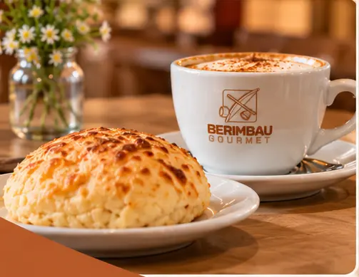
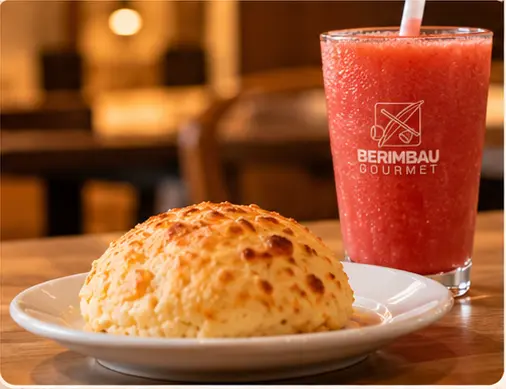
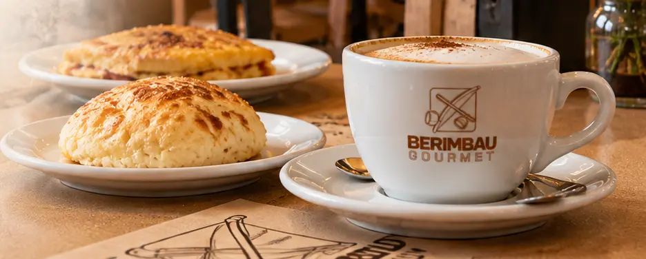

Amostradas dos slides. Confirmar com o manual de marca.
Fundo--bg-creme#FCF6EFCartões--bg-card#FCEFE2Destaque--bg-areia#F2E2CFCírculo de ícone--circulo-icone#F6CEB0Curvas e botões--terracota#B25929Títulos em cor--terracota-txt#AD501FHover--terracota-esc#8F3F1FLogo--marca#A65125Texto principal--cafe#23160CRótulos--sepia#3A2E23Texto secundário--sepia-claro#6B5546
Tipografia
Cormorant Garamond (títulos) + Montserrat (texto). Aproximação das fontes do deck.
Sabores que contam histórias.
No coração de Ilhéus.
Cafeteria · Lanchonete · Restaurante
Gastronomia, tradição e uma experiência especial no coração de Ilhéus.
As fotos do deck são simulações visuais geradas por IA. Servem como referência de direção de arte; no PWA final usar fotos reais dos pratos e do salão.
almoco-parmegiana.webpambiente-salao.webp

cafe-da-manha.webpcentro-historico-rua.webp

lanche-da-tarde.webp

pao-de-queijo-cafe.webp
Mockups
Telas de referência para o layout do site e do PWA.